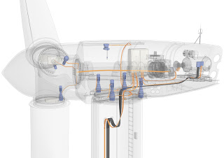
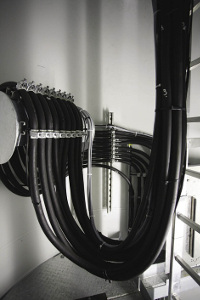

Detalhes dos cabos de energia e sensores associados.
O gerador está ligado à rede eléctrica porcabos de alimentação, que "pendura" da nacele (onde o gerador está localizado) para a base da torre, onde o transformador que eleva a tensão do gerador (690 V) para um valor de média tensão (15KV / 22 KV), que é onde o cabo que o liga à subestação elétrica do parque eólico está conectado.
Como a nacele tem que ser orientada para o vento, sua posição não é fixa, então esses cabos internos de energia para a torção da turbina eólica como eles descem da nacele para a base da torre, dependendo da direção do vento. Veja figura abaixo.



Estes cabos têm dois fixadosâncorapontos, um em cada lado da base da nacele, que é a área onde esta torção ocorre. Logicamente, há um número máximo de voltas, que é tipicamente2.5 gira em cada direção.
Não há sensor para o número de voltas desses cabos, mas o limite máximo é detectado por um interruptor de limite que está ligado à torre, e cuja extremidade do sensor está ligada à extremidade da zona de torção do cabo.
O controlador utiliza o status deste interruptor de limite para parar automaticamente a turbina eólica e iniciar o processo deDescontraindo os cabos.VerAlgoritmos para controlar a orientação e desbobinação de cabos de energia.